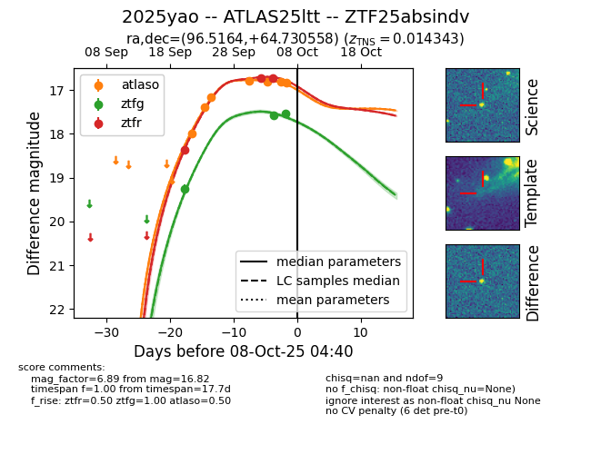
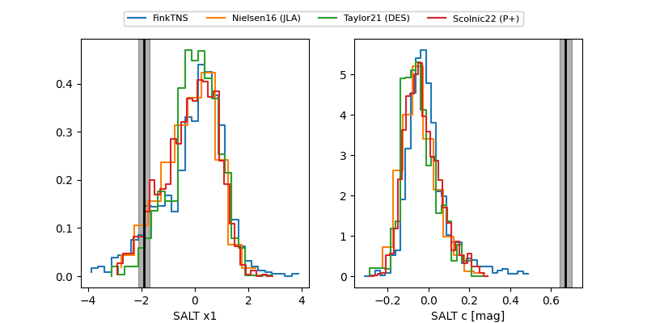

FINK: ZTF25absindv
Lasair: ZTF25absindv
ALeRCE: ZTF25absindv
TNS: 2025yao
YSE: 2025yao
ZTF25absindv (ztf,fink)
2025yao (tns,yse)
ATLAS25ltt (atlas)
equatorial (ra, dec) = (96.5164,+64.73056)
galactic (l, b) = (150.1092,+21.73887)


last atlaso=16.82, ztfg=17.54, ztfr=16.72
7 atlaso, 3 ztfg, 3 ztfr detections